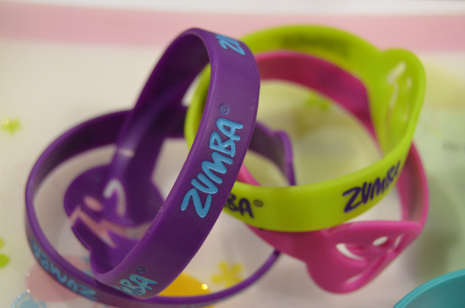

1. Vožnja bicikla
Vožnja biciklom odlična je vježba za sve one koji ne vole teretanu.
Ovaj kardio trening povećaće energiju, a mogu ga izvoditi i oni koji imaju probleme sa zglobovima. Dovoljno je da sjednete na bicikl i uputite se – bilo gdje!
2. Ples
Ako želite da izgubite višak kilograma, ali ne želite redovno da odlazite u teretanu – upišite kurs salse ili nekog drugog brzog plesa.
Pomoću salse ćete sagorjeti i do 600 kalorija po jednom času, a ovaj senzualan ples možete plesati i s partnerom – što ovaj “trening” čini idealnim za parove!
3. Šetnja
Želite da smršate? Šetajte! Pješačenje će vam pomoći da se riješite viška kilograma, a nećete se osjećati kao da naporno vježbate. Odredite neku udaljenost, obujte udobne patike i uputite se u šetnju.
Počnite s manjim relacijama, a zatim ih postupno povećavajte.

Zumba Fitness® je program koji je primjeren za sve dobne skupine. Neovisno o tome u kakvoj ste fizičkoj kondiciji, imate li bilo kakvog ili pak nikakvog iskustva u plesu. Sasvim je nebitno jeste li žena ili muškarac. Sredinom devedesetih, ovaj veliki ljubitelj latino glazbe, krenuo je održati sat aerobika, no na trening je zaboravio ponijeti. Međutim, tom spontanom improvizacijom Alberto je toliko zaludio svoje vježbače da se odlučio posvetiti stvaranju programa Zumba Fitness®-a.